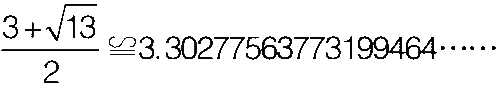

黄金比例的基本特征
首先请记住，Φ是下面方程的一个解：
x2-x-1=0 （1）
我们已经用Φ的近似值验证了这个方程，因此：
更加精确的Φ
这里为热衷精确的朋友准备了黄金比例小数点后999位数字。
1.61803398874989484820458683436563811772030917980576286213544862270526046281890244970720 7204189391137484754088075386891752126633862223536931793180060766726354433389086595939582905 63832266131992829026788067520876689250171169620703222104321626954862629631361443814975870122 034080588795445474924618569536486444924104432077134494704956584678850987433944221254487706 64780915884607499887124007652170575179788341662562494075890697040002812104276217711177780531 531714101170466659914669798731761356006708748071013179523689427521948435305678300228785699782 97783478458782289110976250030269615617002504643382437764861028383126833037242926752631165339 247316711121158818638513316203840052221657912866752946549068113171599343235973494985090409476 21322298101726107059611645629909816290555208524790352406020172799747175342777592778625619432 082750513121815628551222480939471234145170223735805772786160086883829523045926478780178899219 9027077690389532196819861514378031499741106926088674296226757560523172777520353613936
Φ2-Φ-1=0⇒Φ2=Φ+1 （2）
从等式（2）开始，我们在它的两边同时乘以Φ，重复数次后得到：
Φ3=Φ2+Φ
Φ4=Φ3+Φ2
Φ5=Φ4+Φ3
…… （3）
这表明Φ的任意次幂等于它的前两个同底数连续幂相加。因此，一旦求出Φ和Φ2的值就不需要再计算Φ的其他次方，只需要把前两个Φ的同底数连续幂相加就可以得到下一个结果。
通过表达式（2）和（3）同样可以发现，就Φ本身的值来说，它的任意次方与自然数之间还存在其他关系：
Φ3=Φ2+Φ=Φ+1+Φ=2Φ+1
Φ4=Φ3+Φ2=（2Φ+1）+（Φ+1）=3Φ+2
Φ5=Φ4+Φ3=（3Φ+2）+（2Φ+1）=5Φ+3
Φ6=Φ5+Φ4=8Φ+5
Φ7=Φ6+Φ5=13Φ+8
Φ8=Φ7+Φ6=21Φ+13
…… （4）
我们发现，只需要把一个表达式中出现的自然数相加后乘以Φ，然后再加这个表达式中Φ的数字因数，就可以求出Φ的更高次方的近似值。
举例来说，在Φ6的表达式中，8Φ的系数为8，在Φ5的表达式中，自然数5和3相加正好等于8，而且5Φ的系数为5。
当我们利用斐波那契数列求Φ的近似值时，记住表达式（3）和（4）的性质将会非常有帮助。但Φ的性质不止于此，我们接下来会继续讨论。表达式（3）的等号左侧部分也表明，我们可以把两个Φ的同底数连续幂相加得到Φ的几何级数。
接下来让我们求出1/Φ的值，看看之前使用Φ的近似值得到的结果是不是一种巧合。表达式（2）已经对Φ做了限定，因此我们从它开始：
Φ2=Φ+1
Φ2-Φ=1
现在我们在等式的两边同时除以Φ：
（Φ2-Φ）/Φ=1/Φ
Φ-1=1/Φ
这个奇妙的性质让我们看到了新的可能。通过这个简单的运算可以看出，尽管对Φ的限定不是很严格，但它却能够为我们带来美妙的发现。Φ出现在了极为不同的数学领域，而且影响深远。
代数数和超越数
代数数（algebraic numbers）是整系数多项式方程（包含两个以上的项）的复根。 是代数数，它是方程x2-2=0的解，黄金比例Φ也是代数数，它是x2-x-1=0的解。
是代数数，它是方程x2-2=0的解，黄金比例Φ也是代数数，它是x2-x-1=0的解。
不能满足任何整系数多项式方程的实数（不是代数数的数）称为超越数。由于多项式方程有无数个，所以我们可能会认为几乎所有的数都是代数数。但事实并非如此，超越数要多于代数数。
证明一个数是否是超越数并不容易。由于方程的数量无限多，因此无法用一个证明来做出论证。列出每一个证明结果更是不可能的事情！两个最著名的超越数是e和π。1873年，法国数学家查尔斯·埃尔米特证明了e是超越数。虽然人们早在许多个世纪前就已经对π有了一定了解，但是直到1882年，德国数学家费迪南德·冯·林德曼才证明了π是超越数。
下面我们通过计算这个未加限定的连根式来说明这一点。
通过连续添加平方根，我们得到了一连串A的小数近似值。
数列
对数学家来说，数列是指一组根据一定的规则，按顺序排列的任意多的数字。数列中的项通常用一个带有下标的字母重复表示，而下标也说明了项在数列中的位置。具体表示为a1，a2，a3，……，an，……={an}。
请看两个数列的例子，第一个数列的每一项都是偶数，{2，4，6，8，10，……}={2n}，第二个数列中的每一项都是平方数，{1，4，9，16，25，……}={n2}。除此之外还有等比数列，其中的每一项等于前一项乘以公比。换句话说，相邻项相除得到的商是常数。很多数列都有自己的通项，根据每一项的位置就能够求出该项的值。一旦知道了通项，我们就可以定义数列并且知道所有项。以等比数列为例，当首项为a1且公比为r时，通项可表示为an=a1·rn-1。人们也可以通过所谓的“递归定理”来定义数列，这样就可以利用前面的项来求出新的项。用通项定义数列更加方便，但并不是每个数列都有通项。
从这一点来看，即使增加再多的项，结果也只会维持在1.618左右，基本上等于Φ。这又是一个求Φ的近似值的新方法。尽管我们对此一无所知，但还是需要进行验证。
将表达式（5）的两边同时平方得到：
移项后变成A2-A-1=0
这与定义Φ的公式相同。因此，它的解可以作为另一种表示黄金比例的方法：
用连分数求黄金比例的近似值，最终得到下面的表达式：
由于前面已经证明，因此我们可以将表达式（6）写成下面的形式：
连分数
历史上，连分数是求近似值的常用方法。连分数可以写作数列，在计算的每个阶段，ai的值都是整数。
为了方便表示，连分数通常简写为[a1，a2，a3，a4，……]，如果a1和a2周期性重复，就记作。
对于有理数来说，等值分数的连分数是有限的。例如：
任何整系数二次方程的无理数解也可以用循环连分数表示。比如方程x2-bx-1=0的解可以用b的循环连分数表示：
金属比例
我们已经知道了黄金比例是二次方程的正根。通过扩展黄金比例这个概念，人们已经确定了几个与之类似的比例，从而形成了所谓的“金属比例家族”。除了黄金比例以外，还有白银比例、青铜比例等等。它们的几何作图与极限都跟黄金比例类似。人们总是用代数的方法将金属比例确定为二次方程的正解，例如
x2-px-q=0（M）
其中p和q是自然数，正是这两个自然数让金属比例家族出现了不同的“成员”。设p=2、q=1，方程的正数解为1+≌2.414213562373095048……。这就是白银比例。
设p=3、q=1，正数解为

人们把它称作青铜比例。
或许用连分数表示各个金属比例之间的关系才最清楚明白。我们已经知道，而白银比例=青铜比例=
这样我们又发现了表达式（5）和（6）两种表示黄金比例的方法。现如今，计算机让计算变得简单，因此这些求黄金比例近似值的方法也就不那么重要了。但在黄金比例的漫长历史中，人们总是可以在古典文献中找到这些方法。即使是今天，这些方法仍然可以为人们提供很好的脑力训练，而且只要一个便携式计算器就足够了。